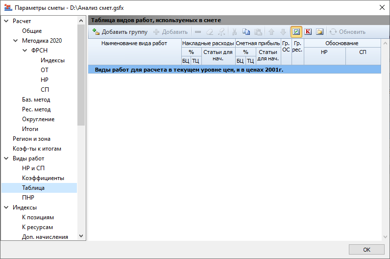

Парсер извлекает информацию из всех файлов ГРАНД-Смета вида «ЛС» и выводит данные из вкладки «Документ» → «Параметры» → «Таблица» (Таблица видов работ, используемых в смете).

| Столбец | Описание |
|---|---|
| Группа | Группа видов работ |
| ГрID | ID группы видов работ |
| Наименование | Наименование вида работ |
| НаимID | ID наименования: |
| НР%БЦ | Накладные расходы: %: БЦ |
| НР%ТЦ | Накладные расходы: %: ТЦ |
| НР%Ст | Накладные расходы: %: Статьи для нач. |
| СП%БЦ | Сметная прибыль: %: БЦ |
| СП%ТЦ | Сметная прибыль: %: ТЦ |
| СП%Ст | Сметная прибыль: %: Статьи для нач. |
| ГрОС | Графа ОС: • С — Строительные работы • М — Монтажные работы • Г — Горные работы • О — Оборудование • П — Прочие затраты |
| ГрРес | Графа ресурса: • (пусто) — По умолчанию • Прв — Перевозка • Пгр — Погрузка |
| ОбоснНР | Обоснование: НР |
| ОбоснСП | Обоснование: СП |
| пНРБаз | Поправочные к-ты к накладным расходам: Баз. |
| пНРБИ | Поправочные к-ты к накладным расходам: Баз.инд. |
| пНРРес | Поправочные к-ты к накладным расходам: Рес. |
| пСПБаз | Поправочные к-ты к сметной прибыли: Баз. |
| пСПБИ | Поправочные к-ты к сметной прибыли: Баз.инд. |
| пСПРес | Поправочные к-ты к сметной прибыли: Рес. |
| ОбКНР | Обоснование к-тов: НР |
| ОбКСП | Обоснование к-тов: СП |
| Категория | Категория: • (пусто) — Не назначено • Строительные работы — Construction • Ремонтно-реставрационные работы — Restoration • Транспортные расходы (перевозка), относимые на стоимость строительных работ — ConstrTransportation • Перевозка — Transportation • Перевозка (Автомобили бортовые) — TranspTrucks • Перевозка (Автомобили-самосвалы) — TranspDumpTrucks • Дополнительная перевозка, относимая на стоимость строительных работ — ConstrAddTransportation • Дополнительная перевозка (Автомобили бортовые) — AddTranspTrucks • Дополнительная перевозка (Автомобили-самосвалы) — AddTranspDumpTrucks • Дополнительная перевозка (Автомобили-панелевозы) — AddTranspPanels • Дополнительная перевозка (Автомобили-трубоплетевозы) — AddTranspPipes • Дополнительная перевозка (Автобетоносмесители) — AddTranspConcrete • Отдельные виды работ и затрат, относимые на стоимость строительных работ — ConstrRelated • Монтажные работы — Mounting • Транспортные расходы (перевозка), относимые на стоимость монтажных работ — MountingTransportation • Дополнительная перевозка, относимая на стоимость монтажных работ — MountingAddTransportation • Отдельные виды работ и затрат, относимые на стоимость монтажных работ — MountingRelated • Оборудование — Equipment • Инженерное оборудование — EqEngineering • Технологическое оборудование — EqTech • Лабораторное оборудование — EqLaboratory • Транспортные средства — EqVehicles • Инструмент для технологических процессов — EqTools • Производственный и хозяйственный инвентарь, в том числе мебель — EqInventory • Дополнительная перевозка, относимая на стоимость оборудования — EqAddTransportation • Прочие затраты — Other • Пусконаладочные работы — Commissioning • Транспортные расходы (перевозка), относимая на стоимость прочих работ — OtherTransportation • Дополнительная перевозка, относимая на стоимость прочих работ — OtherAddTransportation • Отдельные виды работ и затрат, относимые на стоимость прочих работ — OtherRelated • Работы по созданию произведений изобразительного искусства монументального характера — OtherFineArt • Горные работы — Mining • Дополнительная перевозка, относимая на стоимость горных работ — MiningAddTransportation |
Всего столбцов: 23